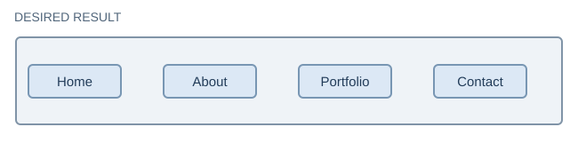
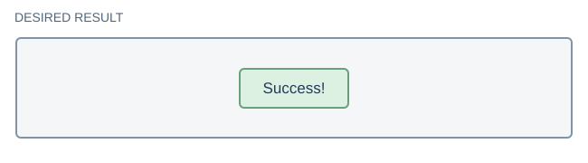
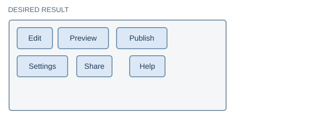
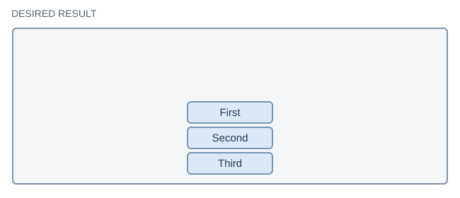

Remember the Big Idea
The parent becomes a flex container when you give it display: flex;. Its direct children become flex items.
Flexbox is excellent for navigation links, toolbars, centering, and spacing items in a row or column. Next, we will use CSS Grid for larger two-dimensional page layouts.
Demo 1: Turn On Flexbox
Watch three boxes change from stacked blocks to a horizontal row. Which element is the parent?
Demo 2: Direction
Start with a row, then make a column. Predict how the main axis changes.
Demo 3: Main-Axis Spacing
Move three items to the center, then try space-between and space-evenly. Observe the spaces at the edges.
Demo 4: Cross-Axis Alignment
This container is deliberately tall. Position its items on the cross axis, then center them in both directions.
Demo 5: Wrapping and Gap
Six buttons should move to another line when space runs out. Make the browser window narrower to test it. Use gap to control spacing.
Demo 6: A Real Navigation Menu
Use Flexbox on the ul, not the individual list items. Turn a vertical list into a horizontal navigation menu.
A navigation list is still a list in HTML. Flexbox only changes its appearance.
On Your Own: Four Layout Problems
Try these without following the instructor's code. Compare the result to each target picture. Your task is to choose the Flexbox properties yourself.
Important: The HTML and appearance are already provided. Add your own layout rules in styles.css. Optional hints are in Canvas.
Challenge 1: Navigation Links
Make four links form one row with equal space between their centers. The links should also sit in the vertical center of the bar.
Your final result should look like this:

Challenge 2: Perfectly Centered
Place the message in the exact middle of the tall rectangle, horizontally and vertically.
Target appearance:

Challenge 3: Flexible Toolbar
Place the buttons side by side with consistent spacing. Make them move onto new lines rather than overflow when the window gets narrow.
Your final result should look like this:

Challenge 4: The Axis Challenge
Stack three labels vertically, with a small consistent gap. Keep the group centered left to right but positioned toward the bottom of the tall rectangle.
Your final result should look like this:

Think Ahead: Flex or Grid?
Would you choose Flexbox or CSS Grid to organize a webpage into a header, main content, sidebar, and footer? Why?
Discuss this question in class. No extra coding is required here.